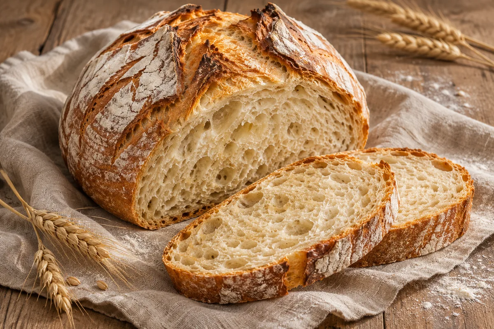

Backwissen
Gutes Brot beginnt beim Teig.
Wie viel Hefe braucht dein Brot? Wann lohnt sich die Gare im Kühlschrank? Und was hilft, wenn der Teig an den Fingern klebt?

Wie Hefeteig aufgeht
Hefe vergärt Zucker im Teig und bildet dabei Kohlendioxid. Im Weizenteig hält das Glutengerüst einen Teil dieses Gases fest. Der Teig gewinnt an Volumen, und aus den Gasblasen entstehen die Poren in der Krume.
Stockgare
Der gesamte Teig ruht nach dem Mischen oder Kneten. Je nach Rezept kannst du ihn in dieser Phase dehnen und falten. Danach formst du den Laib.
Stückgare
Der geformte Laib geht ein letztes Mal auf, bevor er in den Ofen kommt. Je nach Rezept kann die Stockgare oder die Stückgare im Kühlschrank stattfinden.
Auf der Arbeitsplatte oder im Kühlschrank?
Hefemenge, Temperatur und Zeit bestimmen gemeinsam, wie schnell dein Teig reift. Die Temperaturen entsprechen den Richtwerten im Brotzeit-Teigrechner.
20–22 °C als Richtwert
Bei Raumtemperatur
Praktisch, wenn du am selben Tag backen willst. Die Hefe arbeitet schneller als im Kühlschrank. Im Sommer kann dein Teig deshalb früher reif sein als im Rezept angegeben.
Hefemenge: Für eine kurze Gehzeit braucht derselbe Teig meist mehr Hefe. Planst du mehr Zeit ein, kannst du auch bei Raumtemperatur mit wenig Hefe backen.
4–5 °C als Richtwert
Im Kühlschrank
Praktisch, wenn du abends vorbereitest und am nächsten Tag backst. Der Teig kühlt langsam ab und geht auch im Kühlschrank weiter auf. Die lange Gare gibt ihm Zeit, Aroma zu entwickeln.
Hefemenge: Bei einer langen Kühlschrankgare reicht oft weniger Hefe als bei einem schnellen Rezept. Die tatsächliche Kühlschranktemperatur und die Temperatur des Teigs beim Einstellen machen einen Unterschied.
Für die Übernachtgare: Passe Hefemenge und Gehzeit gemeinsam an. Stell den Teig abgedeckt kalt. Hat er morgens erst wenig Volumen gewonnen, kann er bei Raumtemperatur weiterreifen.
Hefe umrechnen: 3 g Frischhefe entsprechen ungefähr 1 g Trockenhefe. Kleine Mengen lassen sich mit einer Feinwaage genauer abwiegen.
No-Knead – Brot ohne Kneten
Für ein No-Knead-Brot genügt es, die Zutaten gründlich zu mischen. Während der Ruhe nimmt das Mehl Wasser auf und in Weizenteigen entwickelt sich das Glutengerüst. Das funktioniert bei Raumtemperatur und mit Kühlschrankgare.
- Mischen. Rühre, bis keine trockenen Mehlnester mehr zu sehen sind.
- Ruhen lassen. Decke den Teig ab und gib ihm die im Rezept vorgesehene Zeit.
- Bei Bedarf falten. Zieh während der Stockgare eine Teigseite hoch und leg sie zur Mitte. Wiederhole das von den anderen Seiten. Das gibt einem weichen Weizenteig mehr Halt.
Was Wasser und Salz verändern
Hydration
Die Hydration ist das Verhältnis von Wasser zu Mehl. Bei einer Mehlmischung zählt die gesamte Mehlmenge. Mehl und Wasser aus einem Vorteig rechnest du mit ein.
350 ml Wasser bei 500 g Mehl ≈ 70 %Mehr Wasser macht Weizenteig meist weicher und klebriger. Wenn Struktur und Gare passen, kann die Krume offener werden. Vollkornmehl bindet oft mehr Wasser als helles Mehl. Deshalb können sich zwei Teige mit 70 % Hydration ganz unterschiedlich anfühlen.
Salzanteil
Salz gibt Geschmack, stärkt in Weizenteigen das Glutengerüst und bremst die Hefe etwas. Wie bei der Hydration bezieht sich die Prozentangabe auf das Mehlgewicht.
10 g Salz bei 500 g Mehl = 2 %Rund 2 % sind für viele Brote ein üblicher Wert. Wieg das Salz ab. Ein Teelöffel feines Salz kann anders wiegen als ein Teelöffel grobes Salz.
Wenn der Teig Probleme macht
Warum klebt mein Teig so sehr?
Teige mit viel Wasser kleben stärker. Gib frisch gemischtem Teig etwas Ruhe, damit das Mehl Wasser aufnehmen kann. Leicht angefeuchtete Hände und eine Teigkarte helfen beim Falten. Viel zusätzliches Mehl senkt die Hydration und verändert die Krume. Roggenteig bleibt von Natur aus klebrig. Feuchte Hände oder eine Kastenform erleichtern die Verarbeitung.
Warum geht mein Teig kaum auf?
Wenn der Teig noch kühl ist, gib ihm abgedeckt mehr Zeit bei Raumtemperatur. Schau nach kleinen Blasen und einer sichtbaren Volumenzunahme. Bleibt er über längere Zeit unverändert, prüfe beim nächsten Ansatz Hefemenge und Frische der Hefe. Sehr heißes Wasser kann die Hefe schädigen.
Muss sich der Teig verdoppeln?
Orientiere dich an der Volumenzunahme im Rezept. Für die Stockgare hilft ein Behälter mit geraden Wänden, an dem du die Anfangshöhe markierst. Bei der Stückgare vieler Weizenteige gibt eine leichte Fingerdelle einen Anhaltspunkt. Springt sie sofort zurück, braucht der Laib meist noch Zeit. Kommt sie langsam zurück, ist er oft backbereit. Bei sehr kalten oder sehr weichen Teigen ist dieser Test weniger aussagekräftig.
Warum läuft mein Laib auseinander?
Weicher Weizenteig kann zu wenig Struktur haben. Dehnen und Falten während der Stockgare und etwas Spannung beim Formen helfen. Fällt der Laib nach deutlichem Aufgehen bei leichter Berührung zusammen, kann die Stückgare zu lang gewesen sein. Eine Kastenform gibt sehr weichen Teigen Halt.
Warum ist mein Brot innen dicht oder klitschig?
Eine dichte Krume kann darauf hindeuten, dass der Teig vor dem Backen zu wenig aufgegangen ist. War der Laib erst luftig und ist dann eingesackt, kann auch Übergare die Ursache sein. Bei einer klitschigen Krume wurde das Brot möglicherweise zu kurz gebacken oder zu warm angeschnitten. Lass es auf einem Gitter vollständig auskühlen.